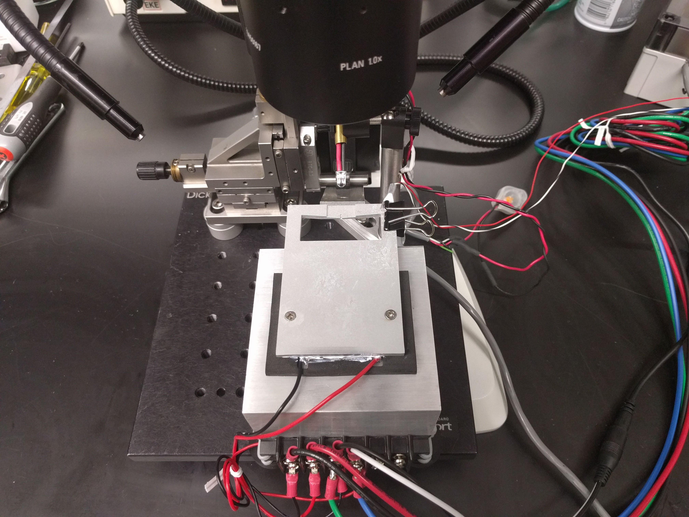
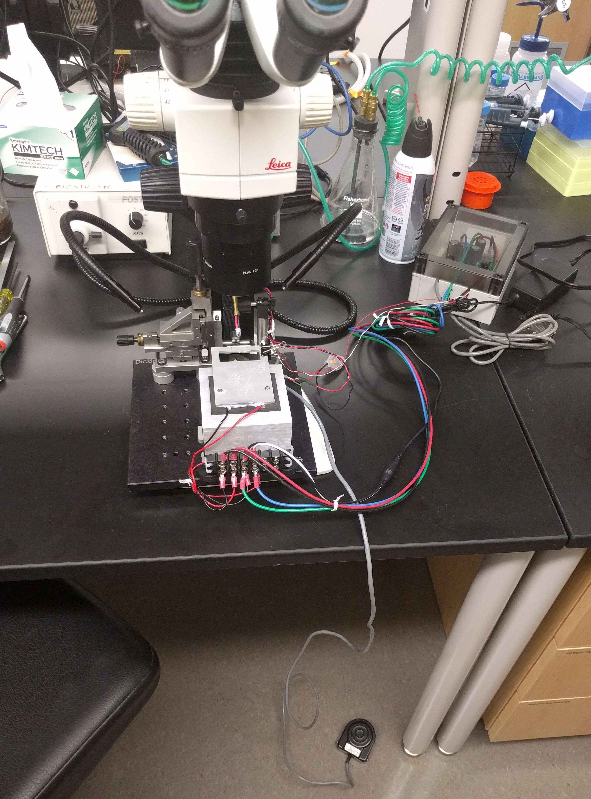

Introduction
This website describes how to cheaply and easily create a rig to attach flies to flyHolders. It is primarily a re-design of the rig constructed by Gaby Maimon in Michael Dickinson's lab. Most labs that I know of use custom machined parts that are difficult and time-consuming to fabricate and comercially available water chillers that are quite expensive, loud, and prone to failure. The following instructions offer equal performance for less than $200. There are two basic parts that we'll buy:
• I designed the metal bridge, which can be machined or ordered online for ~$150.
• The Peltier cooler is available online.
• The temperature controller is available online.
Metal bridge
The solidworks file for the metal bridge can be downloaded here, and an STL file here.
It is possible to machine this part out of aluminum yourself, but I recommend ordering it from ProtoLabs. Their prices and customer service are better than any other machine shop I've worked with. Use their CNC milling option. For material, select Aluminum 6061-T651 Gray Aluminum. It should cost about $150. (Note that it is designed to be very thin in the z-dimension to reduce costs as much as possible.)
This is a 3D rendering of the metal bridge:Peltier-cooler
Jamie Theobald introduced me to the excellent Peltier coolers available from Adafruit. You'll need one of these per rig. Don't forget to order a power supply.
Temperature controller
I found an old programmable temperature controller in a drawer, but if you don't already have one, TE Tech is a good supplier. Their TC-48-20 looks appropriate for this usage.
Final product
Remove the two screws holding the aluminum plate that comes attached to the top of the Petlier cooler. Discard the plate, but keep the screws and use them to attach the metal bridge to the Peltier. There will be some white goo--it is thermally conductive, so keep as much of it as you can.
The final product should look something like this: Here is a picture showing my full rig. I use a foot petal to control the glue-curing LED, and attached a controller to keep the Peltier at just the right temperature:

Troubleshooting
Contact me with questions.